Therapy that only works in a clinic doesn't work for most patients.
Challenge
Design a wearable that fits into home-based physiotherapy: personalised leg rehabilitation, real-time feedback and remote monitoring for better engagement and recovery.
Research
Hospital and physiotherapy visits, observation of existing DVT pumps in use, and a competitive matrix of six devices across 17 criteria.
Outcome
A six-zone sleeve with sequential compression and heat, Velcro fit, and an on-thigh touchscreen with modes, profiles, schedules and wear tutorials.
What is DVT?
Deep vein thrombosis is the formation of blood clots in deep veins, often in the lower extremities, caused by medical conditions that affect how blood clots.
The danger is that a clot can travel through the bloodstream and get stuck in the lungs, blocking blood flow. Recovery depends on keeping blood moving, which usually means compression therapy, repeated regularly.
- How are compression devices actually used today, and by whom?
- Where do existing devices create friction for patients and handlers?
- What would make therapy feel manageable at home?
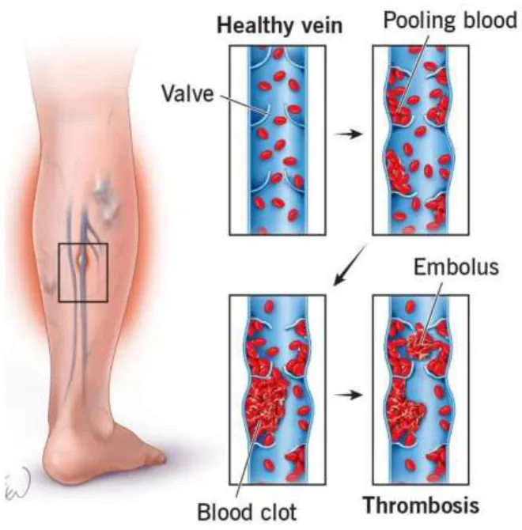
I went to the hospital before I opened a sketchbook.
I visited hospitals and physiotherapy rooms to watch compression and rehab equipment being used for real: who straps it on, how long it takes, what gets cleaned, and what gets in the way.
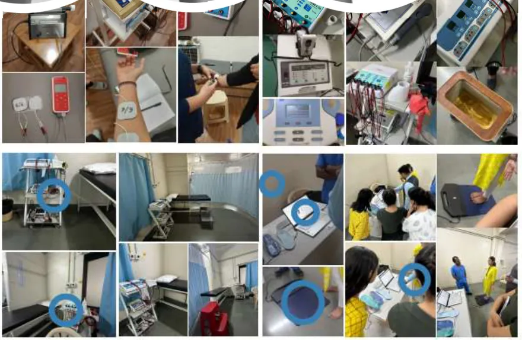
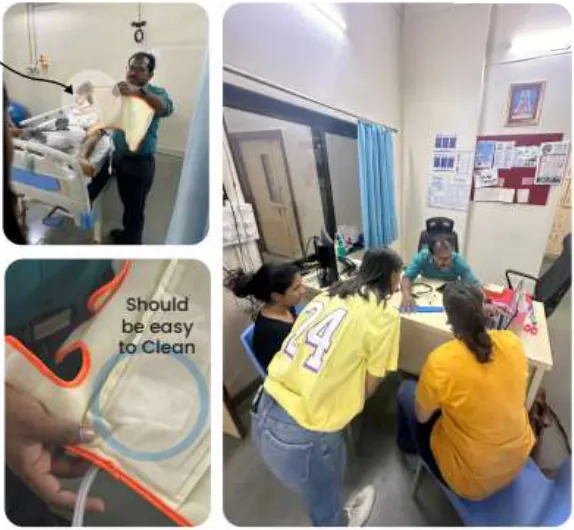
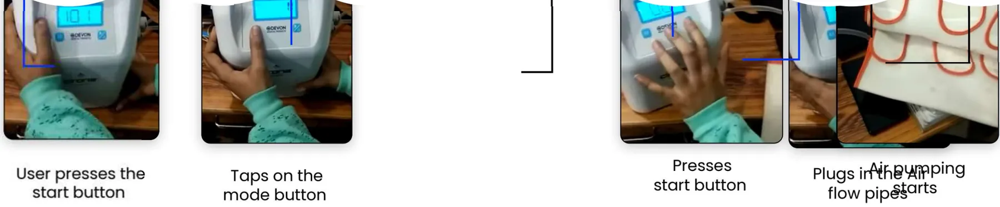
Six devices, seventeen criteria, no clear winner.
I compared CPM machines, DVT pumps, vibrating massagers, Matrix Rhythm devices, oscillating air-compression devices and plantar fasciitis splints on price, purpose, mechanism, target area, DVT prevention, patient participation, professional supervision, customisation and more.
The pattern: devices that actually prevent DVT are passive and uncustomisable. The ones patients engage with don't prevent DVT. That gap became the brief.
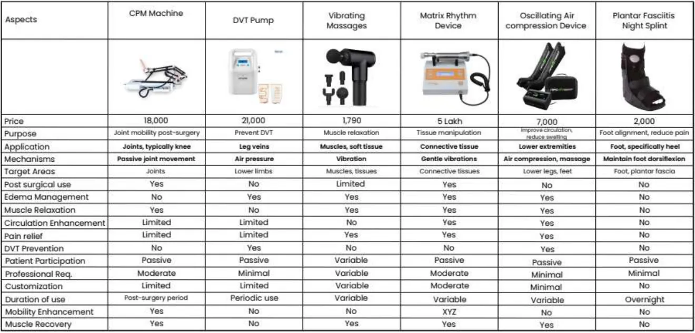
What I heard, and what I did about it.
Velcro already wins on the ward.
Clinicians wrap with Velcro because it's fast and adjustable for any leg.
Kept Velcro closures on every band instead of inventing a new fastening.Hygiene is a hard requirement.
Anything touching skin across patients has to be easy to clean.
Hypoallergenic, breathable inner fabric and a Dry-Fit knee cavity.Hoses kill mobility.
Air pipes tether patients to a base unit, and coverage comes in separate calf, ankle and foot sections.
Self-contained actuators in six zones, from ankle to thigh, in one sleeve.The controls need a handler.
Modes are shown as abstract graphics on a tiny screen, next to cryptic readouts.
Three clear entry points (Mode, Profile, Tutorial) plus “how to wear” videos.Brainstorm wide, then prove it with your hands.
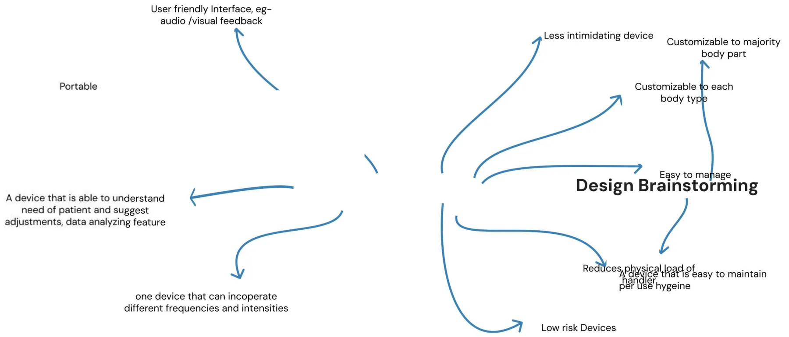
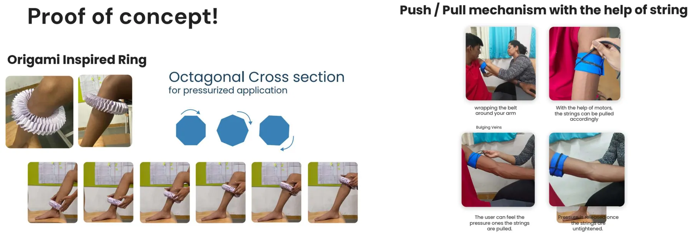
Six zones that squeeze in sequence, from ankle to thigh.
Veneze splits the leg into 6 sections with 6 air cushions and 6 tightening mechanisms. Bands tighten one after another so blood is pumped and directed in one direction. Try it:
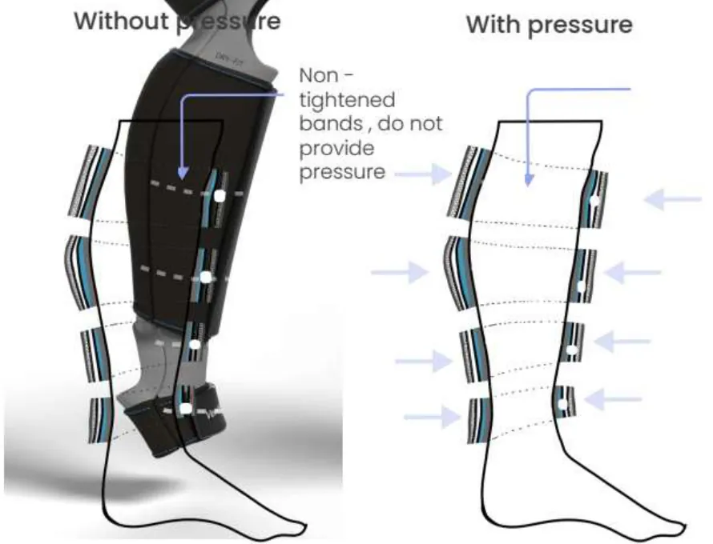
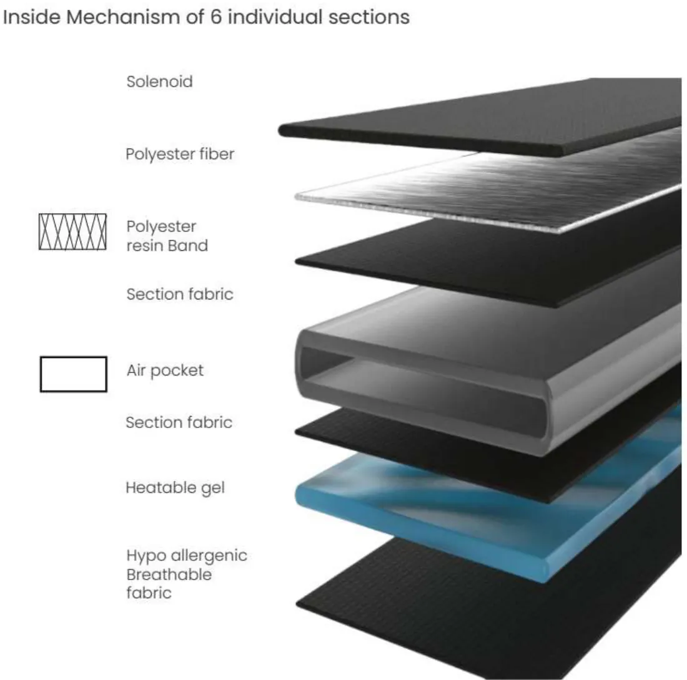
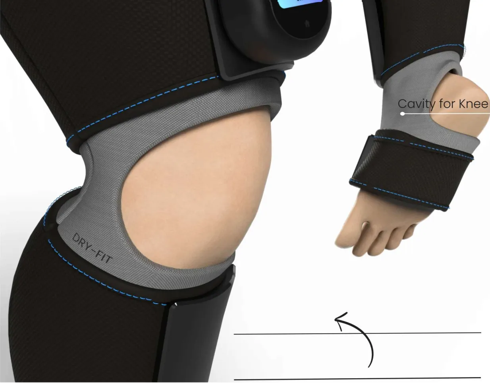
An interface that sits where your hand already is.
The screen is placed on the thigh so patients can reach it while seated, and the display rotates to face the user. The UI trades cryptic readouts for three large entry points and step-by-step guidance.
- Per-section frequency & intensity
- Timer
- Heat + tighten modes
- Scheduled sessions
- Multiple user profiles
- Leg coverage options
- “How to wear” video tutorials
- AI assistance
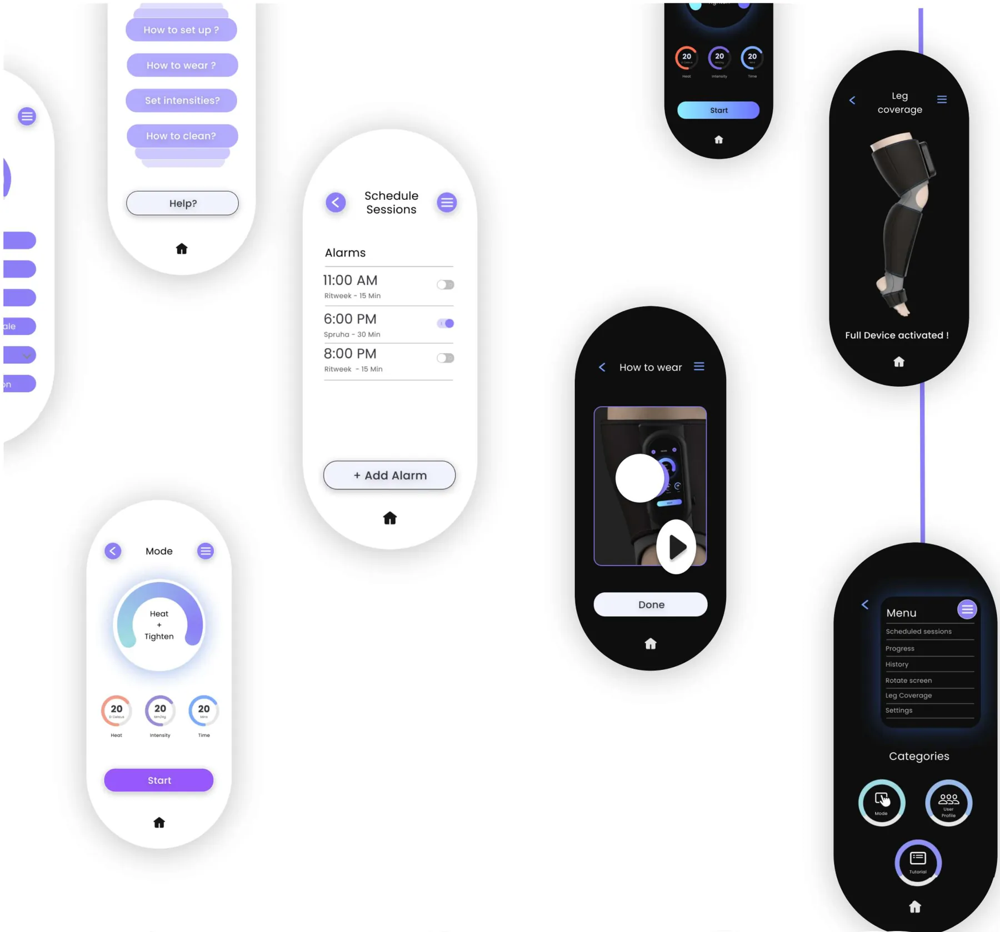
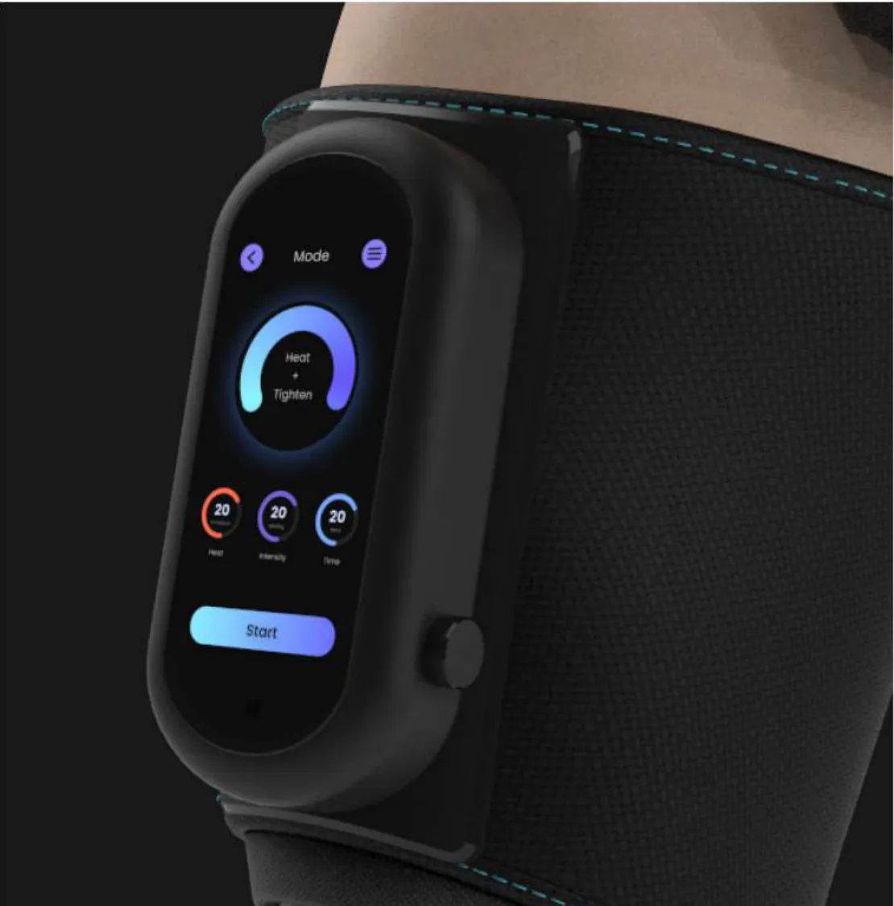
What I'd do with another five weeks.
Test donning with real patients. People recovering from DVT often have limited mobility. Putting on a thigh-to-ankle sleeve is its own usability task, and I'd run it before refining anything else.
Usability-test the UI with older adults and physiotherapists, separately, since they need different things from the same screen.
Define success metrics early: session adherence, time-to-start and error rate. That turns “engaging” into something measurable.
Totsecure →